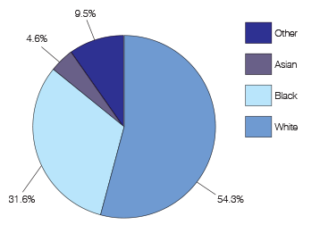

Public Safety and Justice Report by Ward
Ward 1

Virginia Ali, owner of Ben’s Chili Bowl since 1958, “I think crime is a lot more reduced than it used to be.” “I was here when this beautiful neighborhood of ours became a ghetto…with drugs, heroin and crack and lots and lots of crime.” “It was a very difficult time...that’s changed in recent years but it’s much much better now.”
Graphs & Statistics
Race
Demographic Statistics
- General
- Population increased
- One of the district's most diverse wards in 2013
- Income
- Household income averaged $113,165 in 2013, 14% increase
- Education
- 63% of the ward had a bachelor's degree or higher
- Poverty
- Child poverty decreased
Crime Statistics
- Violent Crime
- 36% reduction in violent crime
- 44% decline in reported robbery
- Average violent crimes in 2014 was between 22 and 47
- Homicides ranged from 1 homicide between 2011 and 2014 to 4 homicides
- Decrease in assault iwth dangerous weapon offenses
- Decrease of over 20% in reported ADW offenses
- 44% decrease in robberies
- In 2014, there were on average 38 sexual offenses per ward
- Property Crime
- 22.5% increase in property crime
- Decrease in burglary offenses
- One of the largest decreases in motor vehicle theft, 44% decrease
- Most of Ward 1 experienced between 111 and 388 property crimes in 2014, while a smaller portion experienced between 528 and 1142 property crimes
- In 2014, Ward 1 experienced the greatest number of TFA’s with 2,080 (78% increase)